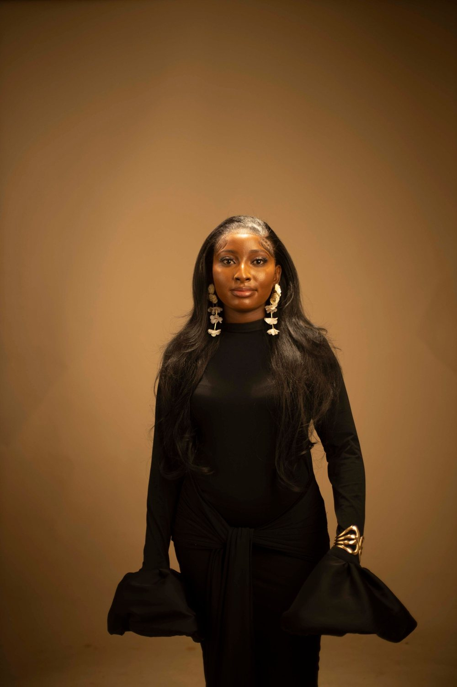
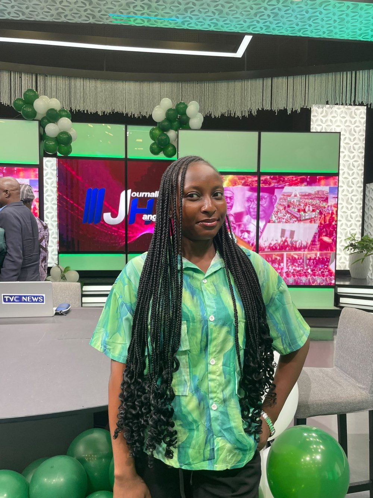

Ruth Ojedokun
I'm a content creator, social media professional and spoken word poet in Lagos. I make clear, engaging content and manage the accounts for Pristine Her and Pristine Minds.
I write it, schedule it and say it out loud.
I'm a digital marketing and communications enthusiast with a strong interest in social media management, content creation and brand strategy.
My career has been shaped by creativity, continuous learning and a wish to help organizations build meaningful digital connections. Working on Pristine and Pristine Her, I've built practical skills in content strategy, social media management, audience engagement, digital marketing and brand communication.
I love storytelling, exploring digital innovation and creating strategies that help organizations grow, connect and stand out.
- Based in
- Lagos, Nigeria
- Accounts managed
- Pristine Her and Pristine Minds
- Education
- BSc Philosophy, University of Lagos
Experience
-
April 2025 – September 2025
Virtual Assistant & Social Media Coordinator
Pristine OB-GYN Care PLC, remote (Texas, USA)
- Developed and coordinated social media content to strengthen brand visibility and audience engagement.
- Created educational and promotional content around women's wellness and healthcare services.
- Supported brand positioning and social media strategy for the company's digital platforms.
- Developed content concepts, captions, promotional messaging and campaign ideas.
- Supported outreach and business development through prospect research and professional email communication.
- Used audience-focused messaging to explain services clearly and encourage engagement.
-
2024 – Present
Content Creator & Social Media Management
Pristine OB-GYN Care PLC
- Create and schedule content for social media platforms.
- Manage audience engagement by responding to comments, messages and inquiries across channels.
- Monitor content performance and recommend ways to improve reach, engagement and audience growth.
-
2024 – Present
Content Writer
- Research and draft articles and other written content across a range of topics.
- Edit and proofread content for clarity, accuracy and consistency before publication.
-
2023 – Present
Spoken Word Poet
- Write and perform original spoken word pieces on social, cultural and personal development themes, at events and on online platforms.
- Adapt performances to diverse audiences so key messages come across clearly.
Pristine Her content
A look at the educational and promotional content I create for Pristine Her, the women's wellness and healthcare account.
The comic post
A story-led comic about everyday tiredness, written as a real conversation between two people and built to be read panel by panel.
The feed
Service flyers, awareness posts and short videos on weight management, B12 shots, IV therapies and GLP-1 education, kept consistent with one teal-led look.
More than half of the views came from people who don't follow the account.
Instagram insights for 15 October – 13 November 2026, compared with the previous period. Views rose from both followers and non-followers.
| Views | 3,278 | up 210.1% |
|---|---|---|
| Viewers | 1,150 | up 1,237.2% |
| Follower views | 1,559 | up 160.7% |
| Non-follower views | 1,719 | up 274.5% |
| Followers | 215 | up 5.9%, net +9 |
Views by content type
Screenshots from Instagram insights.

On air and on stage
On television
I've been invited to speak on several TV channels, including TVC and News Central.
Spoken word
I write and perform original pieces on social, cultural and personal development themes, at events and online, and shape each one for the people listening.
Creators' conferences
I've volunteered at and taken part in several creators' conferences.
Skills
Content
- Content creation
- Content writing
- Copywriting
Social media
- Social media management
- Social media strategy
- Community management
- Audience engagement
Marketing and brand
- Digital marketing
- Brand communication
- Email communication
- Research
- Critical thinking
Education
Bachelor of Science in Philosophy
University of Lagos, Lagos State, Nigeria
January 2024
Let's work together.
Send me an email or a WhatsApp message and tell me what you have in mind.
- Phone and WhatsApp
- 0916 182 7127
- linkedin.com/in/ruthojedokun
- @pristine_her
- Location
- Lagos State, Nigeria